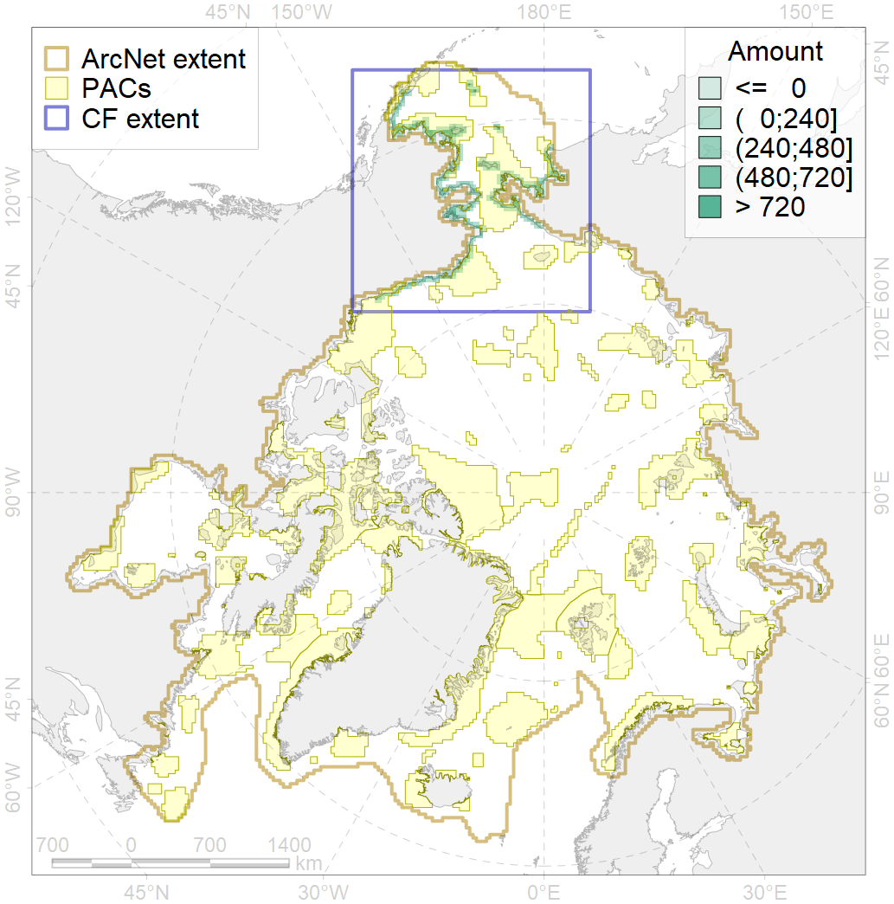
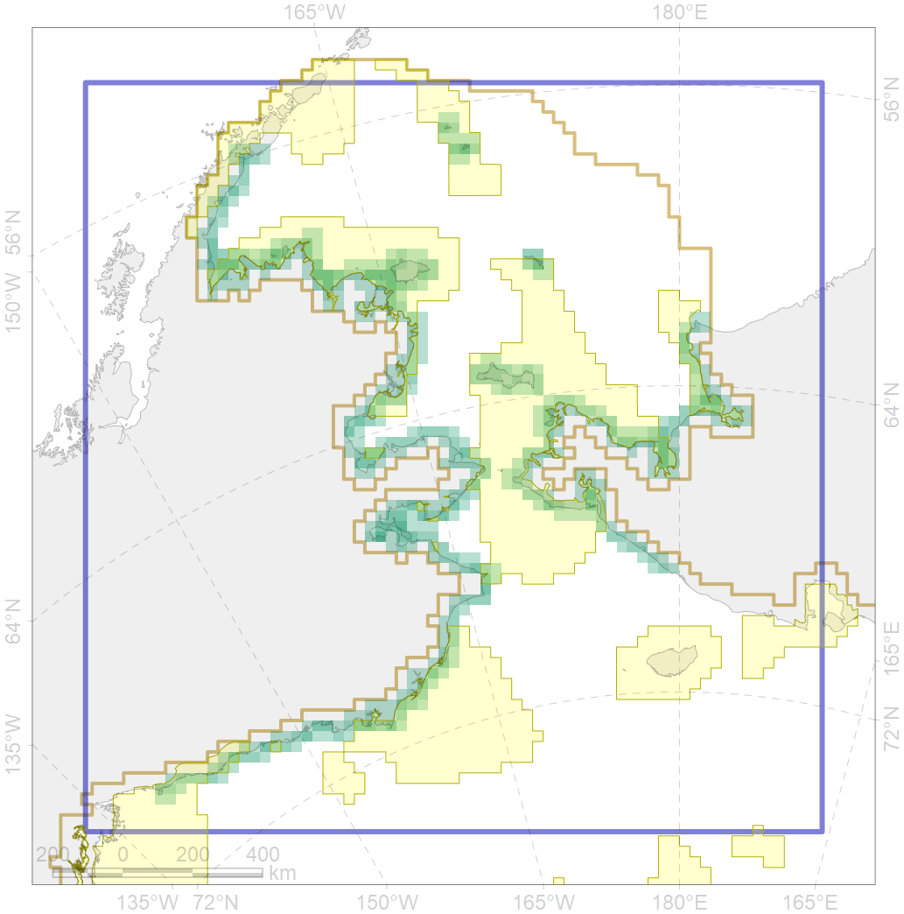

2054

| CF code | 2054 |
| CF name | Spotted seal foraging areas |
| Time Period | Varies by dataset |
| Source(s) | NOAA 1988; 2002 |
| Seasonality | June-December |
| Depth Horizon | 0-200m |
| Methodology | Data compilation, expert input |
| Use Restrictions | Open source |
| Author Name | Irina Trukhanova |
| Notes | |
| Scenario’s Target | 0.12 |
| Target Achievement | 0.609 (Scenario: 507.2%) |
| PAC | Share of the Total Amount within the PAC | Share of the Target Achievement for the ArcNet | PAC’s Contribution to the Target Achievement |
|---|---|---|---|
| 1 | 0.3% | 2.2% | 0.4% |
| 2 | 2.2%2.2% | 18.6%18.7% | 3.7%3.7% |
| 3 | 20.2%26.2% | 158.8%200.9% | 31.3%39.6% |
| 4 | 4.4%6.1% | 29.9%42.7% | 5.9%8.4% |
| 5 | 18.4%22.2% | 140.6%167.0% | 27.7%32.9% |
| 6 | 0.4%1.1% | 3.1%9.4% | 0.6%1.9% |
| 60 | 4.9%6.2% | 30.0%34.7% | 5.9%6.8% |
| 61 | 0.3% | 2.6% | 0.5% |
| 62 | 2.3%2.3% | 15.5%15.8% | 3.1%3.1% |
| inner | 53.3%66.9% | 401.2%494.0% | 79.1%97.4% |
| outer | 46.7%79.5% | 106.0%347.7% | 20.9%68.6% |
| † supplement values are for area consistence whereas principal values are for Accenter compatible gridded stats |